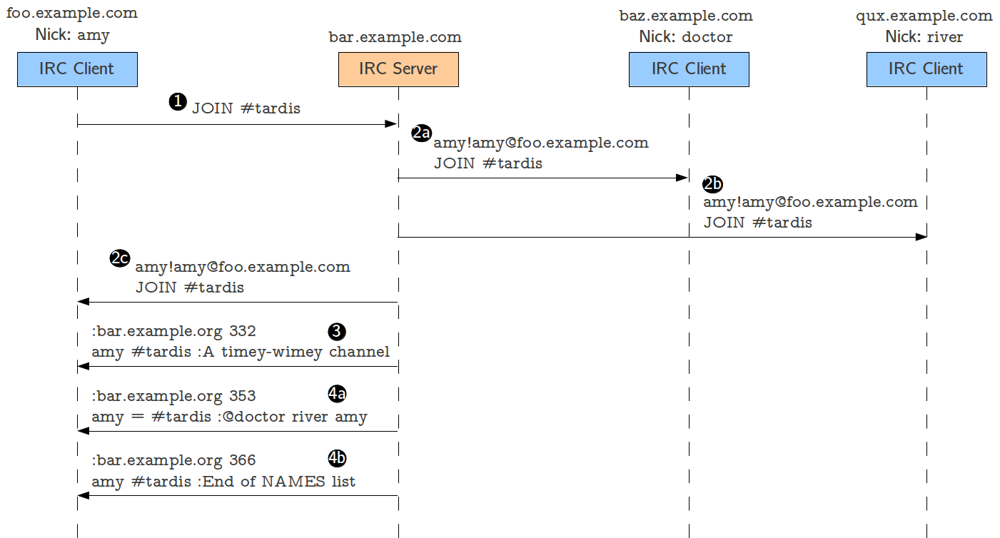

Example IRC Communications¶
In this section, we will describe three example IRC communications. Before diving into the IRC RFCs, we suggest you read through these examples to get a better sense for what a typical conversation between an IRC client and server looks like. These examples will also serve to clarify the format of messages, prefixes, and replies.
Logging into an IRC server¶
Connecting to an IRC server¶
When an IRC client connects to an IRC server, it must first register
its connection. This is done by sending two messages: NICK and
USER (messages 1 and 2 in the figure above). NICK specifies
the user’s nick (amy in this case), and USER provides additional
information about the user. More specifically, USER specifies the
user’s username (amy) and the user’s full name (Amy Pond)
(we will not be implementing the second and third parameters of
USER). The username is typically obtained automatically by the IRC
client based on the user’s identity. For example, if you’re logged into
a UNIX machine as user jrandom, then most IRC clients will, by
default, use that as your username. However, there is no requirement
that your nick must match your username.
Assuming you’ve chosen a nick that is not already taken, the IRC server
will send back a RPL_WELCOME reply (which is assigned code 001).
This reply has the following components:
:bar.example.com: The prefix. Remember that prefixes are used to indicate the origin of a message. Since this reply originates in serverbar.example.com, the prefix simply includes that hostname. This may seem redundant, given that the client presumably already knows it is connected to that server; however, in IRC networks, a reply could originate in a server other than the one the client is connected to.001: The numeric code forRPL_WELCOME.amy: The first parameter which, in reply messages, must always be the nick of the user this reply is intended for.:Welcome to the Internet Relay Network borja!borja@polaris.cs.uchicago.edu: The second parameter. The content of this parameter is specified in [RFC2812 §5]:001 RPL_WELCOME "Welcome to the Internet Relay Network <nick>!<user>@<host>"Notice how the specification of replies omits the first parameter, which is always the recipient of the reply. So, the specification lists the second and subsequent (if any) parameters.
One of the things sent back in the
RPL_WELCOMEreply is the full client identifier (<nick>!<user>@<host>), which is also used in other types of messages. It is composed of the nick as specified in theNICKcommand, the username as specified in theUSER, and the client’s hostname (if the server cannot resolve the client’s hostname, the IP address is used).
The following figure shows a variant of the communication described above:
Connecting to an IRC server when the chosen nick is taken.¶
If a user tries to register with a nick that is already
taken, the server will send back a ERR_NICKNAMEINUSE reply (code
433). Notice how the parameters in this reply are slightly
different:
*: The first parameter should be the nick of the user this reply is intended for. However, since the user does not yet have a nick, the asterisk character is used instead.amy: In theERR_NICKNAMEINUSEreply, the second parameter is the “offending nick” (i.e., the nick that could not be chosen, because it is already taken).:Nickname is already in use: The third parameter simply includes a human readable description of the error. IRC clients will typically print these out verbatim.
So, notice how there is no uniform set of parameters sent back in all replies (other than the first parameter, which is always the recipient nick). When implementing a reply, you must consult [RFC2812 §5] to determine exactly what you should be sending back in the reply.
Messaging between users¶
Sending a message to another user¶
Once several users are connected, it is possible for them to send messages to each other, even in the absence of channels. In fact, most of the second assignment focuses on implementing messaging between users, whereas the third assignment will focus on adding support for channels.
To send a message to a specific nick, a user must send a PRIVMSG to
the server. The figure above shows two users, with nicks amy and
rory, exchanging three messages. In message 1, user amy sends a
message to rory. The parameters for PRIVMSG are very simple: the
first parameter is the nick of the user the message is intended for, and
the second parameter is the message itself.
When the server receives that message, and assuming there is a rory
user, it will forward the message to the IRC client that is registered
with that nick. This is done in message 2, and notice how it is simply a
verbatim copy of message 1, but prefixed with amy’s full client
identifier (otherwise, the recipient IRC client would have no idea who
the message was from). Messages 3 and 4 show a similar exchange, except
going from rory to amy, and messages 5 and 6 show another
message going from amy to rory.
Notice how all messages are relayed through the IRC server (hence the name of the protocol: Internet Relay Chat). Non-relayed messaging is not supported in the IRC specification, and we will not be implementing such a functionality in this project. However, there are two extensions to IRC (CTCP, the Client-to-Client Protocol, and DCC, Direct Client-to-Client) that are the de facto standard for non-relayed chat on IRC. Most IRC servers and clients support these extensions, even though they have never been formally specified as an RFC (the closest thing to a specification is this document: http://www.irchelp.org/irchelp/rfc/ctcpspec.html).
Joining, talking in, and leaving a channel¶
Users connected to an IRC server can join existing channels by using the
JOIN message. The format of the message itself is pretty simple (its
only parameter is the name of the channel the user wants to join), but
it results in several replies being sent not just to the user joining
the channel, but also to all the users currently in the channel.
The figure above shows what happens when user amy
joins channel #tardis, where two users (doctor and river)
are already present.
Message 1 is amy’s JOIN message to the server. When this
message is received, the server relays it to the users who are already
in the channel (doctor and river) to make them aware that there
is a new user in the channel (messages 2a and 2b). Notice how the
relayed JOIN is prefixed with amy’s full client identifier.
The JOIN is also relayed back to amy, as confirmation that she
successfully joined the channel.
The following messages (3, 4a, and 4b) provide amy with information
about the channel. Message 3 is a RPL_TOPIC reply, providing the
channel’s topic (this is a description of the channel which can be set
by certain users; we’ll discuss this in detail later). Messages 4a and
4b are RPL_NAMREPLY and RPL_ENDOFNAMES replies, respectively,
which tell amy what users are currently present in the channel.
Notice how the doctor user has an at-sign before his nick; this
indicates that doctor is a channel operator for channel
#tardis. As we’ll see in the third assignment, users can have modes that
give them special privileges in the server or on individual channels.
For example, a channel operator is typically the only type of user that
can change the channel’s topic.
Once a user has joined a channel, sending a message to the channel is
essentially the same as sending a message to an individual user. The
difference is that the server will relay the message to all the users in
the channel, instead of just a single user.
The figure above shows two messages being sent to
channel #tardis. First, user doctor sends a PRIVMSG message,
specifying the channel as the target (and not a nick, as we saw in “Messaging between users”).
The server then relays this message to river
and amy, prefixing the message with doctor’s full client
identifier (messages 1, 2a, and 2b). Similarly, amy sends a message
to the channel, which is relayed to doctor and river, prefixed
with amy’s full client identifier (messages 3, 4a, and 4b)
Leaving a channel is accomplished with the PART message, which
follows a similar pattern to joining and talking in the channel: the
user wishing to leave sends a PART message, and this message is
relayed to everyone in the channel so they are aware that the user has
left. The server also internally removes that client from the channel,
which means he will no longer receive any messages directed to that
channel. The figure above shows an example of what
this would look like. Notice how the PART message includes two
parameters: the channel the users wants to leave, and a “parting
message” (which is relayed as part of the PART message to all users
in the channel).